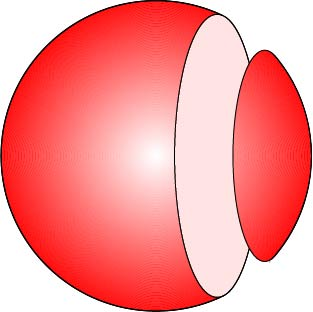
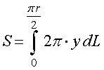
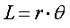
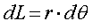
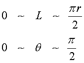
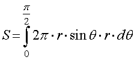
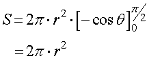

一点から発せられた光をあるNAを持つ対物レンズで取り込む，そのときにNAによってどの程度の明るさが異なるか，など気になりますね．
いろいろなサイトに，NAと明るさの関係の記述があります（オリンパス）．
そこで，まずは球をある平面で切り取った部分の表面積がどのような値になるかを考えましょう．
その際，半頂角との関係も理解しましょう．

球の一部分の表面積を求めるには，積分が必要となります．
そこで，まずは球そのものの表面積を計算しましょう．
こちら，こちら，のサイトを参考にしました．特に，こちら，のサイトでは計算方法がよくわからなかったので，独自に計算してみました．
まずは上記の図を用いて考えましょう．
球の表面積は，半径，ｙ，の円に微小な厚みをかけた円帯を足し合わせていったものですから，半球の表面積は，

となります．
ここで，なぜ，ｘ軸に沿っての積分，ｄｘ，ではないか，の説明は，こちら，のサイトに丁寧に書かれているので，参考にしてみてください．

の関係がありますので，

積分範囲は，

となり，

となります．従って，

となり，この計算は，半球，でしたので球の表面積は，4πr2，と計算できます．
次に，全表面積ではなく，球をスライスした際の表面積を求めましょう．